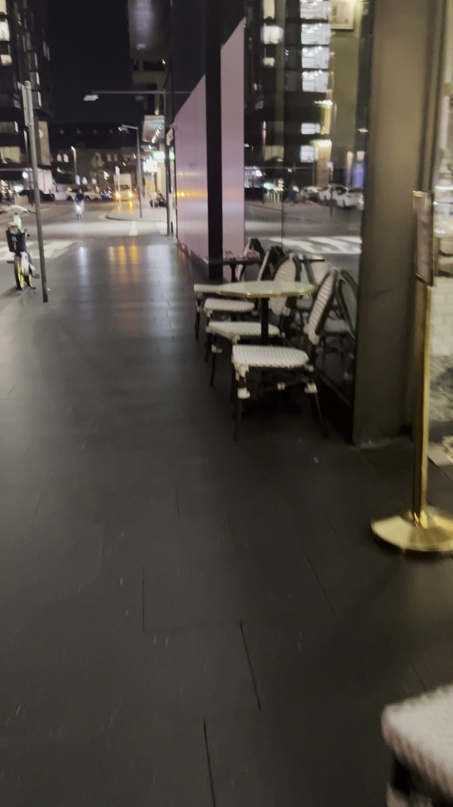
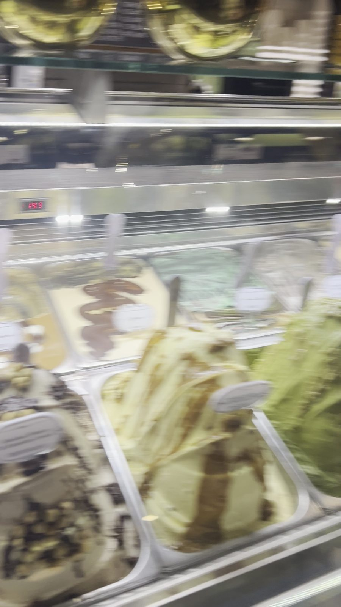

Anita Gelato: the best gelato in Sydney, dangerously close to home
Anita Gelato at Central Park, Chippendale is the best gelato in Sydney. My order is Cookieman and Pavlova, and it costs $8.40 for a small cup.
· Anita Gelato Central ParkI have never, ever loved a gelato place as much as this one.
Anita Gelato at Central Park in Chippendale is just around the corner from my house. That’s a dangerous thing. I walk past it all the time, and I could honestly have it every day.
The gelato is absolutely superb. It’s the best in Sydney, by far.
My order
I’ve always loved ice cream. It’s one of my favourite things. But this stuff is just magical.
My favourite is the Cookieman, and I also love the Pavlova. The cup in my photo is the two combined, and it’s perfect.
A small cup cost me $8.40. It’s the smallest size, but you can still have two flavours in it.
And yes, I’m planning to buy a whole tub for Christmas. A take-home tub is around $28. Totally worth it.
The vibe
It’s right on Central Park, and there are always plenty of places to sit. There are plenty of flavours to choose from too, and the staff are really friendly.
There’s a second Anita near Carriageworks, at South Eveleigh. I’ve tried both in the last week.
The one thing that annoys me
Anita lets you sample the gelato before you choose. That’s lovely in theory. But if you get stuck behind people tasting their way through the cabinet, it takes forever.
So I rarely go in if there’s a line. Maybe I’m just a bit impatient when it comes to my gelato.
My tip: walk past and check the queue. If it’s short, go in. If it’s long, come back later.
Who it’s for
- Gelato lovers: this is the one.
- Locals and students around Central Park and Broadway: you’re very lucky.
- Christmas hosts: grab a tub for dessert.
- Impatient people like me: go when there’s no queue.
My verdict: 9/10. The best gelato in Sydney, by far. It would be a perfect 10 if the sampling queues moved faster.

